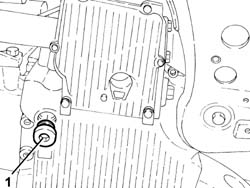
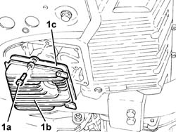

1020A40 Inspection COVER/under sump on crankcase sump - R.R. and Replace. gasket
- Path
- Procedures > 10 ENGINE > 1020 CRANKCASE SUMP AND COVERS > 1020A crank case oil sump > 1020A40 Inspection COVER/under sump on crankcase sump - R.R. and Replace. gasket
- Kind
- repair procedure (removal / refitting; the operation number is the code)
- Applies to
- engines: 2.0 TS; all production periods
- Interactive page
- https://sloeber94.github.io/elrnDB-a147/en/#/3024928
Applies to: engines: 2.0 TS; all production periods
 Removing
Removing
 Refitting
RefittingPosition the vehicle on the ramp.
Proceed with the removal 7055B54 under-engine guard - r r .
1. Undo the plug and drain the engine oil.

Applies to: engines: 2.0 TS; all production periods
1. Undo the bolts (1a) and remove the inspection cover on the crankcase sump (1b), complete with gasket (1c).

Applies to: engines: 2.0 TS; all production periods
Refitting
RemovingPlace the crankcase sump inspection cover, complete with new gasket, back in its housing and secure it by tightening the bolts to the recommended torque.
 | Fastening | Component | Ø | Value (daNm) |
|---|---|---|---|---|
- | Bolt | INSPECTION COVER ON SUMP | M6 | (Crankcase sump side) 0.8 ÷ 1.0 |
Tighten the engine oil drain plug to the crankcase sump to the recommended torque.
| Fastening | Component | Ø | Value (daNm) |
|---|---|---|---|---|
- | - | ENGINE OIL DRAIN PLUG | M18 | (Crankcase sump side) 1.8 ÷ 2.2 |
Proceed with the refitting 7055B54 under-engine guard - r r .
Refill the engine oil lubrication system 1084A10 ENGINE OIL - Check level and top up, if necessary .
Remove the car from the ramp.